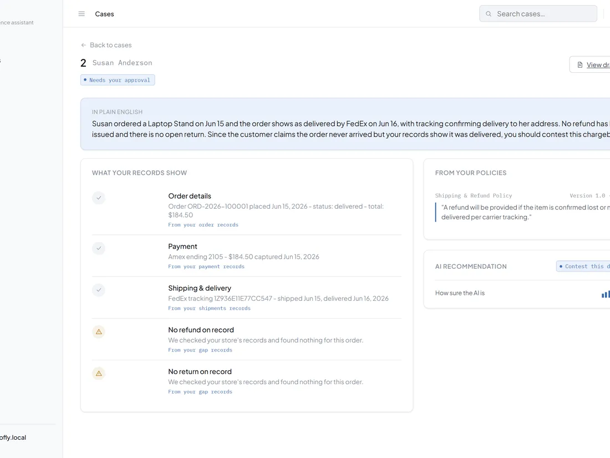

Evidence scattered across systems
Order, payment, fulfillment, refund, and policy detail live in different places, and disputes have a hard reply deadline.
Working build
A self-hosted dispute copilot that reads a merchant's order database and policy documents, then recommends contesting or accepting a chargeback with plain-English reasoning, policy citations, and a downloadable evidence report.
A working build by CyphronTech that is not yet live. No usage or client results are claimed.
Overview
Proofly was built around a narrow, high-stakes task: a merchant has around 48 hours to answer an "item not received" chargeback, and the proof is spread across the order database, a policy PDF, and staff memory. The app reads an order by ID, pulls the matching policy clause, and asks an AI model to weigh the two.
A deterministic safety net cross-checks the AI's recommendation against the merchant's own records before anything is shown, and routes the case to manual review instead of trusting a confident but wrong answer.

Order, payment, fulfillment, refund, and policy detail live in different places, and disputes have a hard reply deadline.
A read-only, allowlisted connector reads the order; the AI reviews it against the cited policy clause; a deterministic check overrides the AI if it contradicts the merchant's own records.
Merchants get a plain-English recommendation and a downloadable evidence report instead of digging through tables by hand.
Scope
Order ID in, plain-English summary out: what was ordered, delivery status, refund history, and the AI's contest/accept recommendation with a confidence score.
The AI quotes the merchant's actual refund or shipping policy, and every quoted clause is verified against the document text before it is shown.
Cases the safety net disagrees with, or the AI is unsure about, are flagged for a human to decide instead of auto-approved.
An approved case exports as a PDF, with a fingerprint hash proving it was not edited after approval, ready to send to the payment processor.
AI workflow
The AI layer reads order, payment, fulfillment, and refund evidence alongside the cited policy clause and recommends contest or accept. A deterministic rule layer then re-checks that recommendation against facts the connector itself read, and overrides the AI when the two disagree.
Implementation direction
The product direction covers a read-only, allowlisted database connector with schema-validated queries, a setup wizard that maps a merchant's own tables and columns, keyword-based policy retrieval with no vector database required, a full audit trail, and packaging as a single Windows installer with an embedded database.
We can design read-only, audited AI review workflows for the high-stakes decisions your team makes under a deadline.